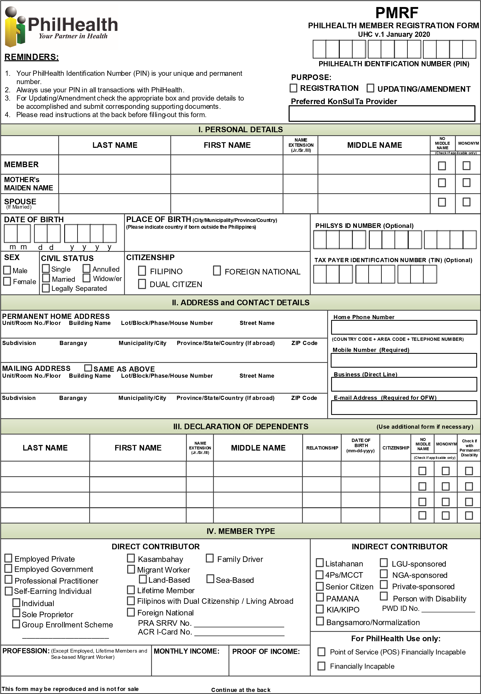
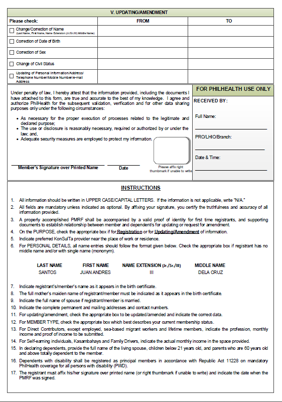
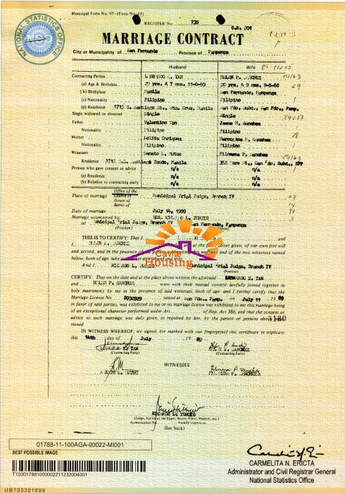
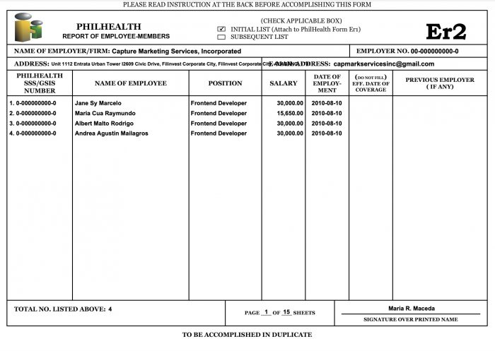
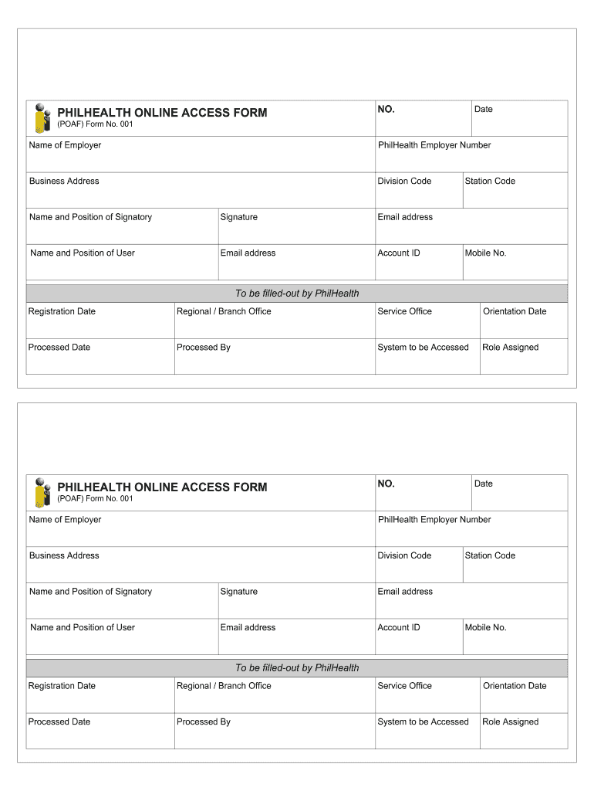
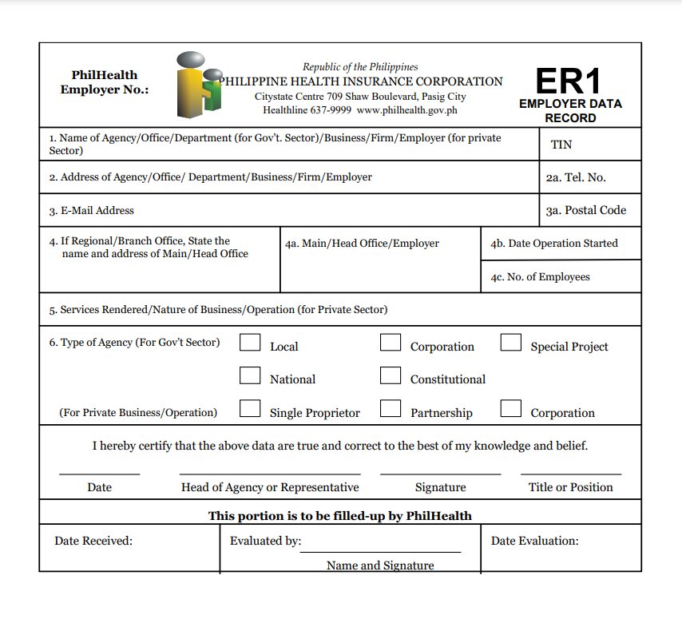
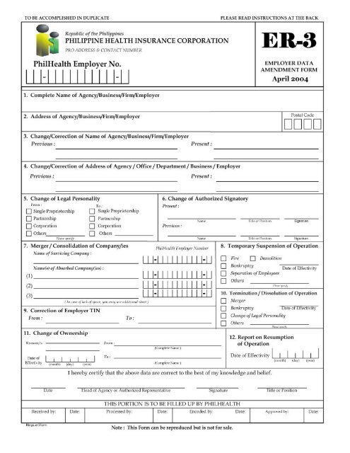

Ano ang dapat I fill Up?
Fill out the PMRF
•
Upang maging miyembro, una ay kailangang punan ang PMRF o PhilHealth Member Registration Form. Kasama dito ang personal na impormasyon ng miyembro tulad ng pangalan ng miyembro, apelyido ng ina ng miyembro bago mag-asawa, pangalan ng asawa ng miyembro kung sila'y kasal sa legal na paraan, kaarawan ng miyembro, lugar ng kapanganakan, kasarian, sibil na estado, permanenteng tirahan, address ng korespondensiya, at numero ng telepono.
Sa ikalawang pahina, ang pangalan ng miyembro ay nakasulat o naka-capitalized na may lagda sa ibabaw nito pati na rin ang petsa kung kailan nilagdaan ang dokumento.
Saan makakakuha nang PMRF?
Public Assistance and Complaint’s Desk (PACD) PhilHealth Website
(www.philhealth.gov.ph/downloads) or in any PhilHealth Local Insurance Office (LHIO)
• Kung mayroon kang anumang tanong o katanungan tungkol sa PMRF o anumang iba pang problema o kailangan ng tulong, mangyaring pumunta sa PUBLIC COMPLAINTS DESK at humingi ng tulong mula sa isang staff.
Sila ay magbibigay sa iyo ng kopya ng PMRF-PhilHealth Member Registaration Form at tutulong sa iyo sa pagproseso nito.
PMRF - (PhilHealth Membership Registration Form)


Anong mga DOKUMENTO ang Kailangan?
Birth Certificate/Baptismal Certificate If SINGLE
• Dalhin ang larawan o xerox kopya ng birth certificate ng miyembro na may numero ng rehistro mula sa LCR (Local Civil Registrar) o PSA (Philippine Statistics Authority),
Ang miyembro ay maaari ring magdala ng Binyag na Sertipiko na may numero ng rehistro.
Papaano kung ikaw ay KASAL?
Marriage Contract/Certificate of Marriage If MARRIED
• Kung kasal naman ang miyembro, siguraduhing may dala etong xerox copy nang kanyang
Marriage Contract/Certificate of Marriage, bilang isang refference sa dokumento.

Papaano naman kung walang dalang kahit anong uri nang CERTIFICATE?
Provide any Government Issued IDs
• Magbigay ng larawan o kopya ng anumang balidong ID o ID na inisyu ng Pamahalaan.
Lisensya ng Drayber, TIN ID, SSS ID, PNP ID Card, Senior Citizen ID, atbp.

Paano naman kung gagamitin a TRABAHO?
Provide any Government Issued IDs
• Para sa mas madaling paraan, kung ikaw ay HIRED na
magtungo sa kung saang employer ka na hired. Pagkatapos ayy papirmahan sa employer ang ER2 FORM, saka magtungo
sa malapit na PHILHEALTH OFFICE, at magpasa nang importanteng DOKUMENTO.

Paano Mag Register nang Business/Employer?
All Private Employers and Government Agencies
Magtungo lamang sa PACD - Public Complaint's Desk na matatagpuan
sa frontline 1st floor nang PhilHealth Office. Eto ay para makakuha ka nnag DOCUMENTARY FORM
na kinakailangan, upang makapag register ang iyong business kasama na din dito ang mga empleyado.
Ano ano ang mga DOCUMENTARY REQUIREMENTS?
• POAF-PhilHealth Online Access Form
- Ang Form na eto ay para sa business na gumagamit nang system.

• ER-1 (Employer Data Record)
- Form para sa pag reregister nang mismong business, at anong klaseng agency
kung eto ba ay Sole-Proprietor, Corporate, For Partnerships, Corporations, Foundations, and Other Non-Profit Organizations.

Paano Mag Register nang Business/Employer?
All Private Employers and Government Agencies
Magtungo lamang sa PACD - Public Complaint's Desk na matatagpuan
sa frontline 1st floor nang PhilHealth Office. Eto ay para makakuha ka nnag DOCUMENTARY FORM
na kinakailangan, upang makapag register ang iyong business kasama na din dito ang mga empleyado.
Ano ano ang mga DOCUMENTARY REQUIREMENTS?
• ER-2
- Ang Form na eto ay para sa mga listahan nang mga empleyado na miyembro
nang PhiHealth.
• ER-1 (Employer Data Record)
- Form para sa pag reregister nang mismong business, at anong klaseng agency
kung eto ba ay Sole-Proprietor, Corporate, For Partnerships, Corporations, Foundations, and Other Non-Profit Organizations.
Note:
Ang mga sumunod ay mga Mandatory Requirements sa bawat uri nang Business Agencies.
• Para sa Sole-Proprietor:
- Department of Trade and Industry (DTI) Registration (1 photocopy)
• Para sa Partnerships, Corporations, Foundations, and Other Non-Profit Organizations:
- Securities and Exchange Commission (SEC) Registration (1 photocopy)
• Para naman sa Cooperatives
- Cooperative Development Authority (CDA) Registration (1 photocopy)
• Para naman sa Backyard Industries/Ventures and Micro-Business Enterprises
- Barangay Certification and/or Mayor’s Permit (1 photocopy)
Paano mag Update para sa Ammendment nang Employer?
Fill up the ER-3 Form
• Magtungo sa PACD upang kumuha nang form para sa EMPLOYER DATA AMMENDMENT FORM
